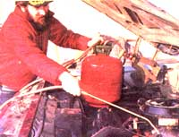
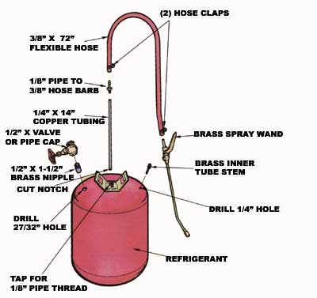

There's nothing that'll spruce up a greasy engine more quickly than a bout with a good old steam cleaner. But it's likely that your home garage doesn't include such an extravagant device, so you might be willing to settle for the next best thing: a pressurized solvent sprayer.
Of course, any parts house would be more than happy to sell you one of these tools, but why buy something you can make yourself in just a short time? Start by locating a discharged refrigerant canister similar to the one shown in our photo. (These tanks can't be refilled, so your local refrigeration mechanic might be persuaded to give you one of the "veterans".) Also scrounge up a piece of 1/4 " copper tubing that's about 14 " long (or whatever length is necessary to reach from the top to the bottom of your tank), an old inner tube with a brass stem, a 1/8 " pipe to 3/8 " hose barb, a 1/2 " X 1- 1/2 " brass pipe nipple, a cap or a valve to fit the nipple, a couple of small clamps, and a few feet of 3/8" fuel line hose. The last item needed is a brass spraying wand, which should be available at your local nursery or hardware store. (Sorry, but you'll probably have to spend about $12 for this part.)
After you've collected your materials, take the cylinder outside and-while wearing gloves and eye protection-aim its valve away from you and release any refrigerant that may be inside. Once that's done, you can cut off the tip and then tap the resulting hole to accept a 1/8 "pipe thread.
Next, drill two holes (1/4" and 27/32" in diameter) in the top of the canister as shown in the drawing. (The larger opening can be drilled with a smaller bit and filed out, if necessary.) Sand any paint from around those bores, and-using a propane torch, flux, and 60/40 acid core solder-"tin" the metal's surface. Now, strip the inner tube valve of its rubber coating, remove the heat-sensitive valve core, and sand the sleeve clean ... then solder the stem and the 1/2" pipe nipple into their proper openings. (Be sure to replace the core later.)
While the torch is hot, go ahead and fasten the copper tube inside the threaded end of the hose barb, cut a notch at the opposite end of the tube, and screw the assembly in place. Finally, clamp the hose between the barb and the spraying wand and install a gate valve or pipe cap on the fill neck.
To use the device, partially fill it with a 50/50 mixture of kerosene and Gunk solvent, or even a detergent solution. (Never use gasoline!) Then seal the filler, and-using a hand pump so you don't increase the pressure to over 25 pounds (the solder joints might give way at a significantly higher PSI level)-charge the container. The solvent spray will do a great job of loosening grungy buildup, and then a garden hose can be used for the final rinse. Though your homemade cleaner may not be as fancy as a real steam unit, it certainly will come through under pressure!
|
 |
 |
|